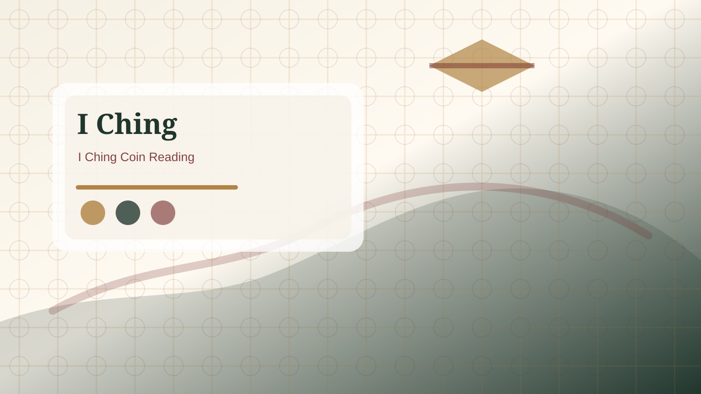

Is this I Ching tool random?
The tool creates a stable starter reading from your question input. Treat the result as a structured reflection, not as proof of fate or professional advice.

Short answer
The online tool creates a six-line starter reading from the question you enter. It is designed to give a consistent, readable result for reflection. Whether a reader uses coins, yarrow stalks, or a digital tool, the important part is not pretending the mechanism proves certainty. The value comes from how carefully the result is read and applied.
Why the question still matters
The question gives the reading a frame. A vague question usually produces a vague reflection. A specific question about timing, work, love, money, or a decision gives the hexagram something concrete to organize. The tool does not need private data, and it should not be used to expose sensitive personal details.
Concrete example
If you type Will everything be okay? the result may feel too general because the question is too general. If you type What should I review before accepting this job offer? the reading can be compared with real details such as salary, timing, role expectations, and conversations with the employer. The same tool becomes more useful because the question is clearer.
How to use the output
After the result appears, record the primary hexagram, changing lines, relating pattern, and one possible action. Then compare the result with facts. If it helps you slow down, check assumptions, or choose a safer next step, it has done its job. It should not replace professional judgment or direct communication.